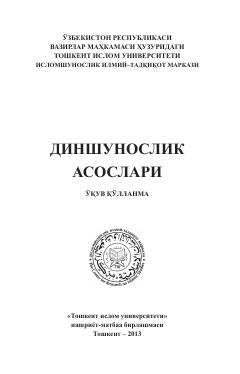

DADinlar tarixi va dinshunoslik fanini o'rganuvchi talabalar uchun asosiy qo'llanma.
Ushbu o'quv qo'llanma Toshkent islom universiteti tomonidan 2013-yilda nashr etilgan bo'lib, dinshunoslik fanining asoslari, dinlarning tasnifi, jamiyatdagi vazifalari va turli diniy yo'nalishlarni o'rganishga bag'ishlangan. Qo'llanma oliy ta'lim talabalari uchun mo'ljallangan va 'Dinshunoslik asoslari', 'Manaviyat asoslari' hamda 'Dunyo dinlari tarixi' fanlarini o'qitishda qo'llanilishi mumkin. Shuningdek, mahalla faollari, xotin-qizlar qo'mitalari va manaviyat targ'ibot markazlari uchun ham foydali manba hisoblanadi.